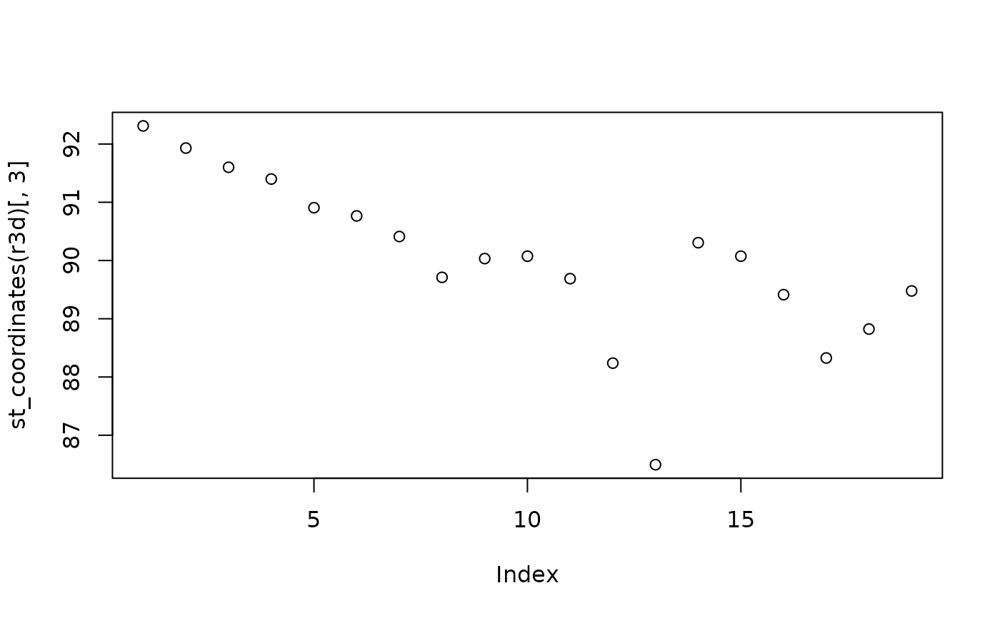
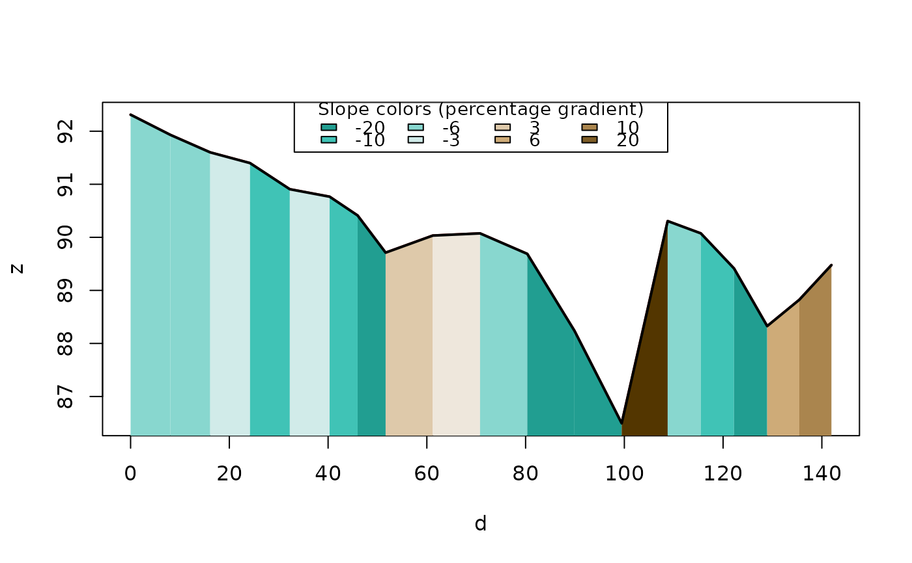

Adds elevation data to sf objects using a digital elevation model (DEM).
Usage
elevation_add(
routes,
dem = NULL,
method = "bilinear",
add_z = TRUE,
add_column = FALSE,
terra = NULL
)Arguments
- routes
An sf object containing linestring or point geometries.
- dem
A SpatRaster object containing elevation data (default:
NULLfor automatic download viaelevation_get()).- method
Method for raster extraction (default:
"bilinear").- add_z
For point geometries only: if
TRUE(the default), the Z coordinate is embedded directly in the point geometry, returning POINT Z features. Set toFALSEto keep the original XY geometry. Ignored for linestrings (Z is always added to linestring vertices).- add_column
For point geometries only: if
TRUE, anelevationcolumn is added to the returned sf object in addition to (or instead of, whenadd_z = FALSE) the Z geometry. Default:FALSE. Ignored for linestrings.- terra
Deprecated. Ignored; terra is always used.
Value
An sf object. For linestrings: XYZ linestring geometries. For points:
POINT Z geometry (when add_z = TRUE) and/or an elevation column (when
add_column = TRUE).
Details
For linestring geometries, the function attaches elevation as the Z coordinate of each vertex, returning an XYZ linestring sf object.
For point geometries, the function embeds the Z coordinate directly in
the geometry by default (returning POINT Z features), consistent with the
linestring behaviour. An elevation column can additionally be added by
setting add_column = TRUE.
Examples
library(sf)
#> Linking to GEOS 3.12.1, GDAL 3.8.4, PROJ 9.4.0; sf_use_s2() is TRUE
# Linestring usage:
routes <- lisbon_road_network[204, ]
dem <- dem_lisbon()
(r3d <- elevation_add(routes, dem))
#> Simple feature collection with 1 feature and 7 fields
#> Geometry type: LINESTRING
#> Dimension: XYZ
#> Bounding box: xmin: -87080.48 ymin: -105629.6 xmax: -87056.99 ymax: -105506.3
#> z_range: zmin: 86.49414 zmax: 92.31126
#> Projected CRS: ETRS89 / Portugal TM06
#> # A tibble: 1 × 8
#> OBJECTID Z_Min Z_Max Z_Mean Min_Slope Max_Slope Avg_Slope
#> * <int> <dbl> <dbl> <dbl> <dbl> <dbl> <dbl>
#> 1 2997 86.5 92.3 89.9 0.334 32.0 7.49
#> # ℹ 1 more variable: geom <LINESTRING [m]>
st_z_range(r3d)
#> zmin zmax
#> 86.49414 92.31126
plot(st_coordinates(r3d)[, 3])

plot_slope(r3d)

# Point usage — Z embedded in geometry by default:
pts <- sf::st_cast(sf::st_geometry(lisbon_road_network[204, ]), "POINT")
pts <- sf::st_sf(id = seq_along(pts), geometry = pts)
(pts_z <- elevation_add(pts, dem))
#> Simple feature collection with 19 features and 1 field
#> Geometry type: POINT
#> Dimension: XYZ
#> Bounding box: xmin: -87080.48 ymin: -105629.6 xmax: -87056.99 ymax: -105506.3
#> z_range: zmin: 86.49414 zmax: 92.31126
#> Projected CRS: ETRS89 / Portugal TM06
#> First 10 features:
#> id geometry
#> 1 1 POINT Z (-87064.34 -105506....
#> 2 2 POINT Z (-87065.47 -105514....
#> 3 3 POINT Z (-87066.6 -105522.3...
#> 4 4 POINT Z (-87067.73 -105530....
#> 5 5 POINT Z (-87068.86 -105538....
#> 6 6 POINT Z (-87069.99 -105546....
#> 7 7 POINT Z (-87075.24 -105548....
#> 8 8 POINT Z (-87080.48 -105550....
#> 9 9 POINT Z (-87080.06 -105560....
#> 10 10 POINT Z (-87079.65 -105569....
sf::st_z_range(pts_z)
#> zmin zmax
#> 86.49414 92.31126
# Also add an elevation column:
(pts_z_col <- elevation_add(pts, dem, add_column = TRUE))
#> Simple feature collection with 19 features and 2 fields
#> Geometry type: POINT
#> Dimension: XYZ
#> Bounding box: xmin: -87080.48 ymin: -105629.6 xmax: -87056.99 ymax: -105506.3
#> z_range: zmin: 86.49414 zmax: 92.31126
#> Projected CRS: ETRS89 / Portugal TM06
#> First 10 features:
#> id geometry elevation
#> 1 1 POINT Z (-87064.34 -105506.... 92.31126
#> 2 2 POINT Z (-87065.47 -105514.... 91.93055
#> 3 3 POINT Z (-87066.6 -105522.3... 91.60098
#> 4 4 POINT Z (-87067.73 -105530.... 91.39918
#> 5 5 POINT Z (-87068.86 -105538.... 90.90644
#> 6 6 POINT Z (-87069.99 -105546.... 90.76579
#> 7 7 POINT Z (-87075.24 -105548.... 90.41173
#> 8 8 POINT Z (-87080.48 -105550.... 89.71082
#> 9 9 POINT Z (-87080.06 -105560.... 90.03311
#> 10 10 POINT Z (-87079.65 -105569.... 90.07415
pts_z_col$elevation
#> [1] 92.31126 91.93055 91.60098 91.39918 90.90644 90.76579 90.41173 89.71082
#> [9] 90.03311 90.07415 89.68823 88.23794 86.49414 90.30598 90.07446 89.41338
#> [17] 88.32646 88.82267 89.47759
# Only an elevation column, keep XY geometry:
(pts_col <- elevation_add(pts, dem, add_z = FALSE, add_column = TRUE))
#> Simple feature collection with 19 features and 2 fields
#> Geometry type: POINT
#> Dimension: XY
#> Bounding box: xmin: -87080.48 ymin: -105629.6 xmax: -87056.99 ymax: -105506.3
#> Projected CRS: ETRS89 / Portugal TM06
#> First 10 features:
#> id geometry elevation
#> 1 1 POINT (-87064.34 -105506.3) 92.31126
#> 2 2 POINT (-87065.47 -105514.3) 91.93055
#> 3 3 POINT (-87066.6 -105522.3) 91.60098
#> 4 4 POINT (-87067.73 -105530.3) 91.39918
#> 5 5 POINT (-87068.86 -105538.2) 90.90644
#> 6 6 POINT (-87069.99 -105546.2) 90.76579
#> 7 7 POINT (-87075.24 -105548.4) 90.41173
#> 8 8 POINT (-87080.48 -105550.5) 89.71082
#> 9 9 POINT (-87080.06 -105560.1) 90.03311
#> 10 10 POINT (-87079.65 -105569.6) 90.07415
if (FALSE) { # \dontrun{
# Get elevation data (requires internet connection, ceramic pkg, and API key):
if (requireNamespace("ceramic", quietly = TRUE)) {
r3d_get <- elevation_add(cyclestreets_route)
plot_slope(r3d_get)
}
} # }